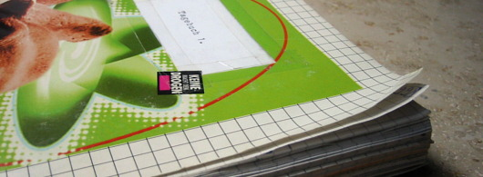

@charak
@charakBlick ins Tagebuch
Jedes Jahr mache ich mir einen guten Vorsatz. Er sollte nicht zu schwierig sein und mir in irgendeiner Weise gut tun, damit ich ihn durchhalte. Ich hatte beispielsweise schon vollständig computerfreie Samstage und täglich eine Portion Fitnessübungen, die sich von Woche zu Woche steigerte. Dieses Jahr habe ich mir vorgenommen, einmal pro Woche Tagebuch zu schreiben.
Angeregt dazu hat mich ein Blogartikel von Zach Holman. Die Motivation von Zach ist, mit dem Tagebuchschreiben das Gedächtnis zu erweitern und Rückblicke zu ermöglichen. Zum Beispiel bedauert er, im College mit dem Schreiben aufgehört zu haben und nun gar keine Aufzeichnungen über seine ersten Jahre in der Arbeitswelt zu besitzen. Es kommt ihm im Rückblick vor, als hätte er diese Jahre gar nicht gelebt.

Ich bin jetzt nicht so der Rückblick-Typ, aber wer weiß, vielleicht kommt das irgendwann. Bisher habe ich meine Tagebücher mehr zum Gedanken sortieren verwendet und um mir Dinge von der Seele zu schreiben. Nachdem ich in den vergangenen zwei Jahren gerade mal fünf Einträge gemacht habe, dachte ich, ich könnte das mit einem guten Vorsatz mal wieder ein bisschen forcieren.
Anfang Mai habe ich auch meine allerersten beiden Tagebücher herausgekramt, jeweils vier zusammengeklebte karierte DIN-A5-Hefte. Ich habe sie von Juni 1998 bis Oktober 1999 beschrieben, dazu Postkarten, Kinotickets, Fotos und Fahrscheine eingeklebt. So richtig darin gelesen habe ich bislang noch immer nicht, aber ich könnte ja mal mit dem allerersten Eintrag anfangen. Er steht neben einem eingeklebten Zeitschriften-Ausschnitt mit Sieben Regeln fürs [Tagebuch-]Schreiben und ist vom Mittwoch, den 3. Juni 1998:
Warnung
Ich habe mir diese beiden Hefte für nur 2,50 DM gekauft. Trotzdem, sie sind etwas Besonderes, nämlich "mein geheimes Tagebuch". Also, …
… wenn du nun schon unbefugt die erste Seite aufgeschlagen hast, mach’ sie wieder zu und lege das Tagebuch an seinen Platz zurück. Solltest du trotz dieser Warnung weiterlesen, ist dies ein sehr großer Vertrauensbruch zwischen uns. Das hier geht dich gar nichts an!
Der Tagebuchführer
Gerhard GroßmannFalls ich schon tot bin, darfst du selbstverständlich weiterlesen …
Bisher halte ich meinen guten Vorsatz durch, wenngleich ich manchmal den Eintrag der vorangegangenen Woche am Montag oder Dienstag nachhole.
Ein willkommener Nebeneffekt des Tagebuchschreibens ist jedenfalls, dass ich meine Handschrift trainiere. Das ist mir auch wichtig, also meine Aufzeichnungen per Hand und auf Papier zu machen. Eine Journal-App zu benutzen oder ein Fototagebuch zu führen, wie Zach Holman es anregt, wäre nichts für mich.